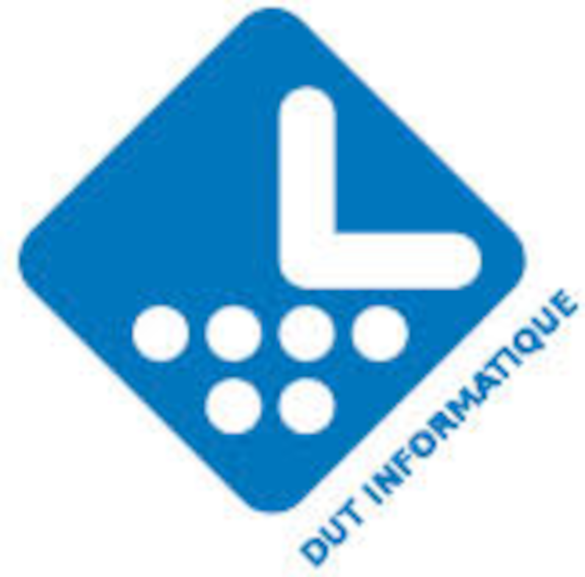
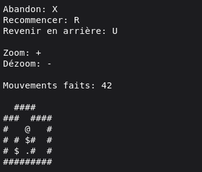
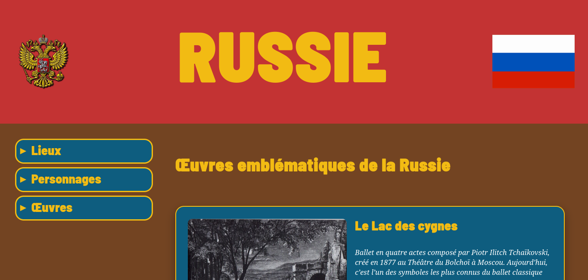
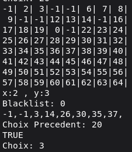

Développeur en formation
Genna
Fomine
Étudiant à l'IUT de Lannion · Bretagne, France
Je conçois des applications et des interfaces web, passionné par le code bien structuré et les produits durables.
Développeur en formation
Étudiant à l'IUT de Lannion · Bretagne, France
Je conçois des applications et des interfaces web, passionné par le code bien structuré et les produits durables.
Genna Fomine Développeur · Lannion
Développeur débutant à l'IUT de Lannion, je construis des applications web de bout en bout. J'attache autant d'importance à la qualité du code qu'à l'expérience finale de l'utilisateur.
Étudiant, j'ai eu l'occasion de travailler sur de nombreux projets universitaires, aider des personnes en informatique et contribuer à des projets open source personnels.
En dehors du code, je m'intéresse à la lecture, au design de systèmes et à l'automatisation. Je crois qu'un bon développeur est aussi un bon communicant.
DébutantConfirmé
12Projets livrés
3Langues parlées
100+Commits cette année


Développement d'une applicationLangages utilisés : C · Java
Jeu parfaitement fonctionnel livré dans les délais sans aucun bug dans la version 2.
Code réutilisable : structures de données en C réemployées dans deux projets suivants.
Code C mal optimisé : les procédures de déplacement et de undo pouvaient être faites plus simplement. Objectif : faire de la meilleure optimisation dans les projets futurs.
La rigueur acquise en C est directement transposable à C++ dans le futur.
La logique objet Java s'applique naturellement à C# ou tout autre langage orienté objet.
Exploration algorithmique d'un problèmeLangages et outils utilisés : C · Python · Théorie des Graphes
Automatisation fonctionnelle : l'algorithme passe tous les tests.
Propagation fonctionnelle avec benchmark des deux algorithmes pour comparer les résultats.
Backtracking fonctionne mal dans le problème du cavalier. Objectif : faire attention à la méthode utilisée dès le début.
Trop de temps perdu dans la création du code. Objectif : mieux maîtriser le temps de codage.
La théorie des graphes s'applique aux réseaux sociaux, routage réseau ou jeux vidéo (pathfinding).
Les algorithmes d'automatisation simplifient les tâches pénibles en entreprise.
Installation d'un poste pour le développementOutils utilisés : Bash · PHP · Docker
Environnement Docker fonctionnel
Script Bash fonctionnel toutes les conversions sont faites sans aucun problème
Calculs PHP utilisés pour faire certaines conversions spécifiques
PHP incompris Je n'arrivais pas à comprendre ce langage durant ce projet → Objectif : maitriser le PHP.
Docker non fonctionnel sur ma machine personnelle → Objectif : passer sous Linux (atteint)
Ces compétences s'appliquent à tout environnement comme Node.js ou Python
Bash utilisé dans la vie de touts les jours pour simplifier la vie.
Exploitation d'une base de donnéesOutils utilisés :TutorialD , PostgreSQL
Schéma normalisé validé par l'enseignant.
Programme TurorialD fonctionnel avec suppression et création des tableaux
Programme PostgreSQL fonctionnel peuplement réstant
Schéma imparfait La réalisation était loin d'être la meilleure → Objectif : apprendre à faire de bonnes relations.
Les compétences SQL sont transférables à MySQL, MariaDB, SQLite.
La logique relationnelle aide à comprendre les bases
Recueil de besoinOutils utilisés : HTML · CSS
Responsive réussie preceque tout à été parfait dès le début.
Fonctionnalités approuvés par le professeur.
Présentation orale réussie
Mauvaise charte graphique Les couleurs choisies n'était pas les meilleurs → Objectif : apprendre d'avantage sur la colorimètrie
Quelque defauts dans le design comme les combo-box par dessus les articles → Objectif : trouver de meilleurs résolutions des problèmes
La démarche s'applique à tout projet : application mobile, logiciel métier ou refonte de système.
Soutenance orale souvent présente en entreprise
Organisation d'un travail d'équipeCoordination, communication et gestion de projet collaboratif
Projet livré dans les délais malgré un coéquipier démissionaire.
Informations sur l'entreprise cohérentes
Diaporama mal fait les régles n'était pas réspéctés. → Objectif : apprendre à faire de meilleures diapositives.
Passage à l'oral échoué → Objectif : s'ameliorer en discours
Ces compétences s'appliquent à tout contexte professionnel : Scrum, projets en entreprise ou alternance.



Disponible en tant qu'alternant. N'hésitez pas à me contacter !
gennafomine@gmail.com